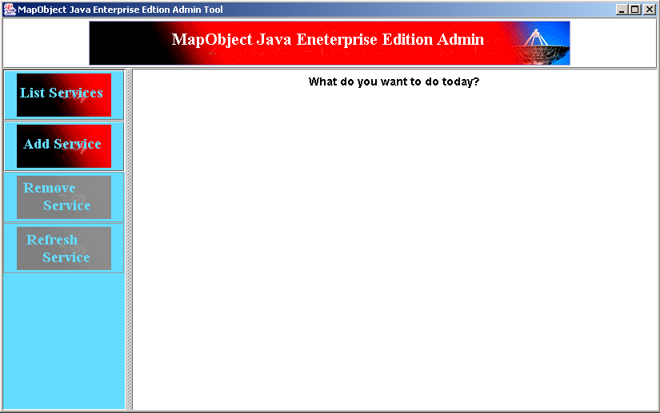
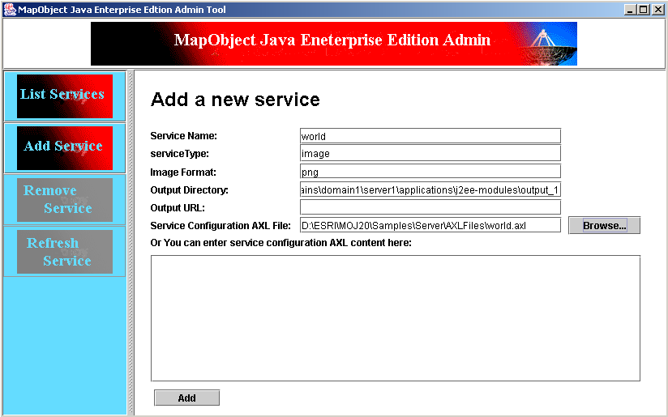
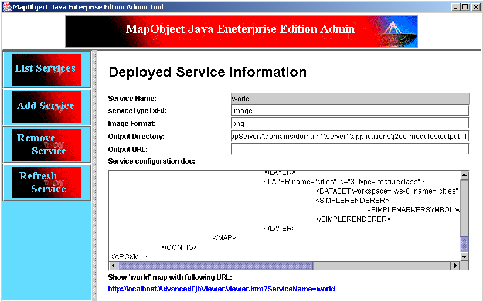

for Windows
for Linux and Unix
Or type the following command when CatalogEJB is deployed as an EJB module:
for Windows
for Linux and Unix
You should see a Java application running with the following screen shot:



